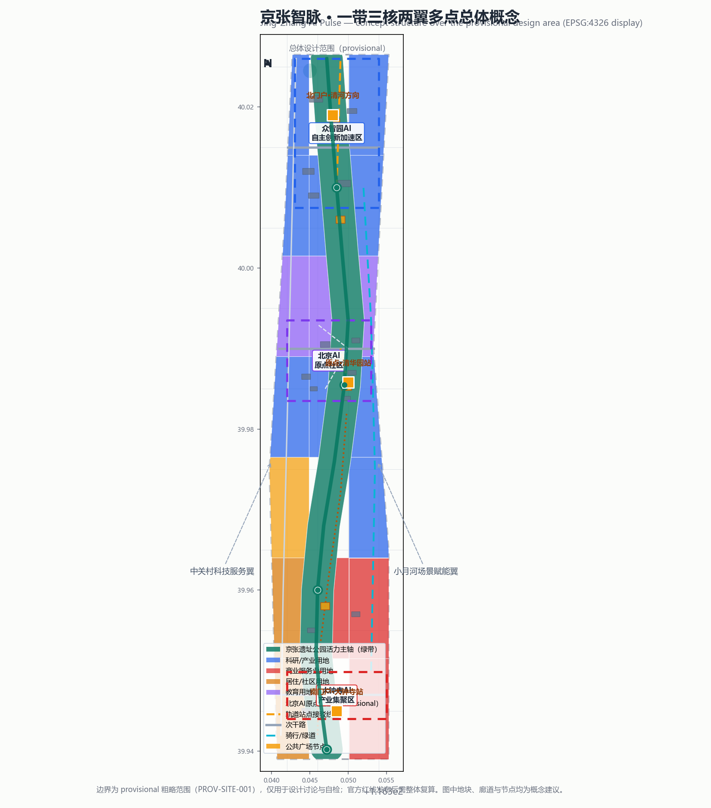
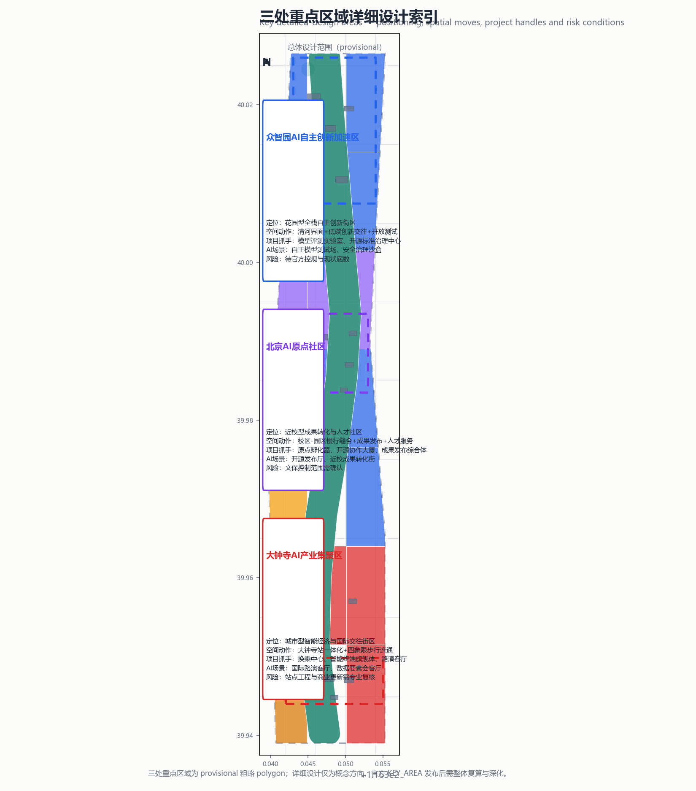
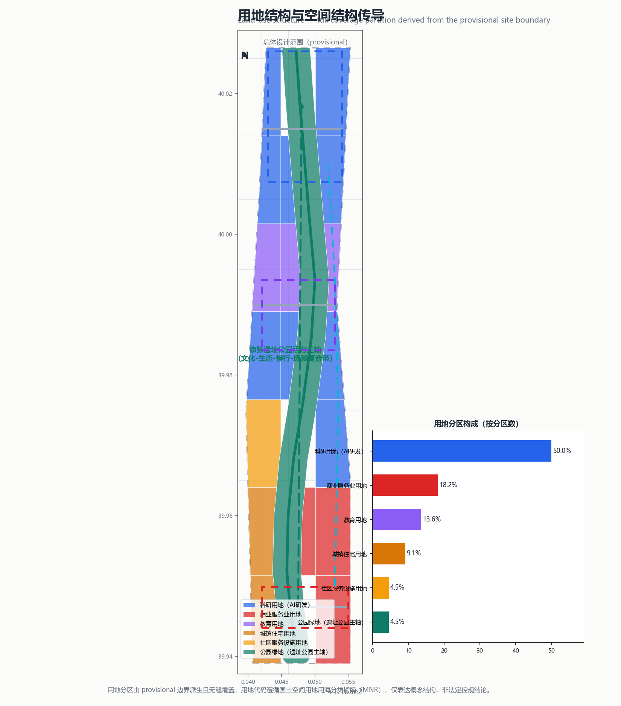
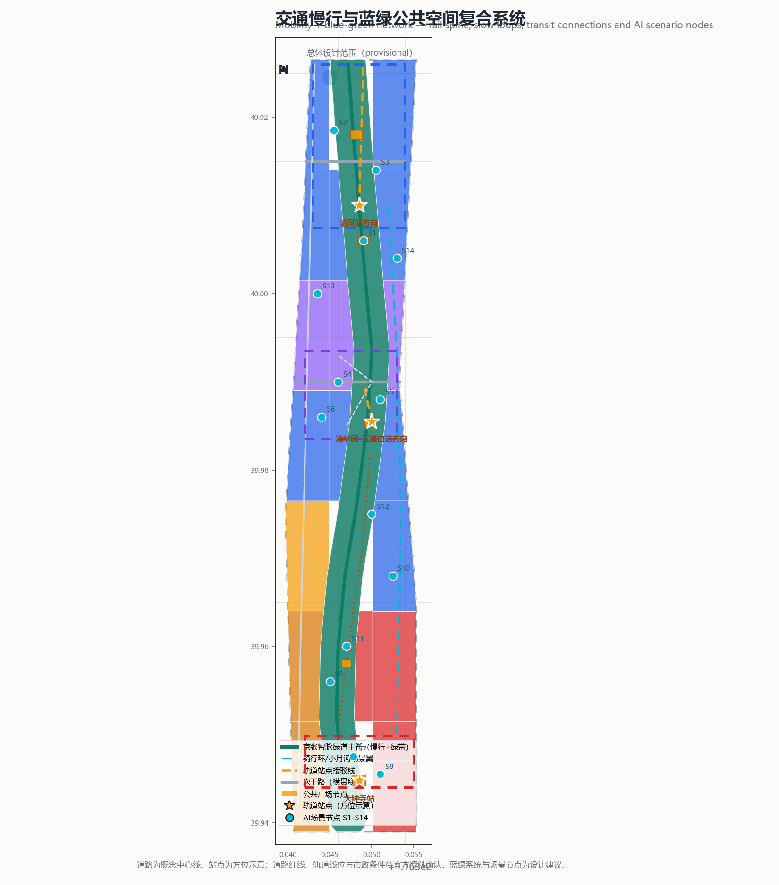
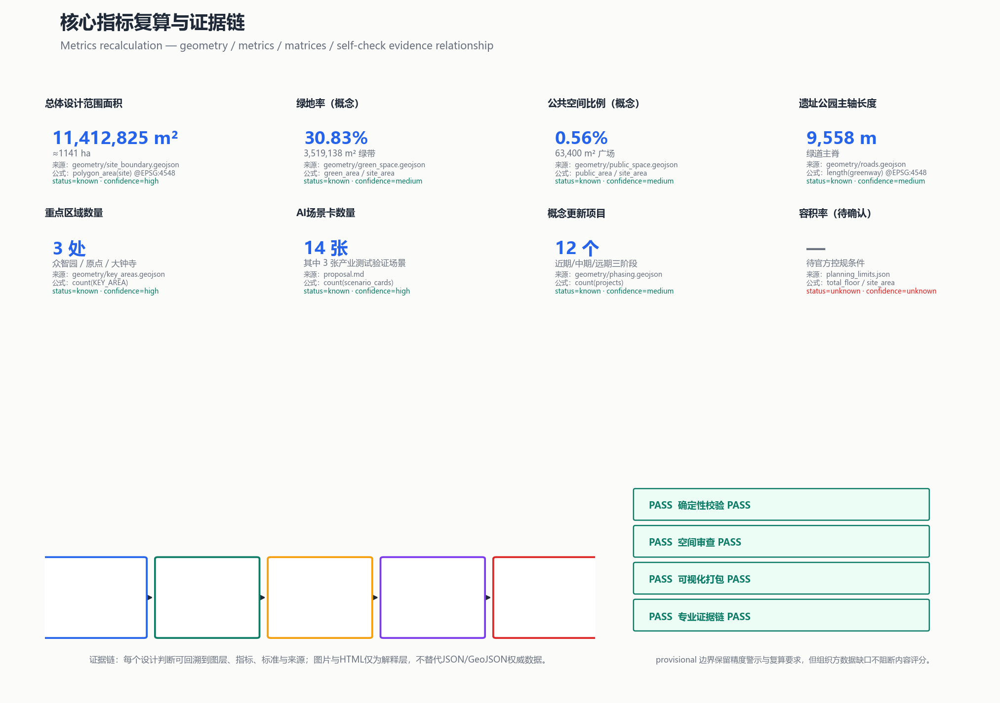

百年京张AI创新带城市设计开源征集 · 正式AI方案（professional_design_package）— 一带三核两翼多点 · 14张AI场景卡 · 4处朝圣地标 · 三阶段实施
边界：provisional（PROV-SITE-001），官方红线发布后整体复算
图1 · 总体概念总览：虚线为 provisional 总体设计范围；绿带为遗址公园活力主轴；三处彩色虚线框为重点区域；橙色方块为轨道站点/门户节点。图中地块、廊道与节点均为概念建议。
约43.6 km² · 产业战略与未来城市形态 · 三区两翼协同回路 · 命名/Logo方向（agent.1）
约11.4 km² · 城市更新与控规深度 · 22个用地分区 · 12条道路 · 3期实施
约368.4 ha · 众智园/原点社区/大钟寺三处详细设计（provisional）

花园型全栈自主创新街区：模型评测实验室、开源标准治理中心、共享测试广场；清河界面低碳创新廊；自主模型测试场（S2）与安全治理沙盒（S3）为产业测试验证场景。
近校型成果转化与人才社区：原点孵化器、开源协作大厦、成果发布综合体；清华园AI原点文化馆；开源发布厅（S1）、近校成果转化街（S6）。
城市型智能经济与国际交往街区：大钟寺站一体化、四象限步行连通、站前智汇广场；智能终端旗舰体；国际路演客厅（S7）、数据要素会客厅（S8）。

用地分区由 provisional 边界派生、无缝覆盖全边界；用地代码遵循国土空间用地用海分类指南（MNR），仅表达概念结构。

道路为概念中心线、站点为方位示意；道路红线、轨道线位与市政条件待官方资料确认。
18处概念建筑基底（总基底面积 144,875 m²），分布于三处重点区域与主轴沿线，类型含研发、实验室、孵化器、办公、混合、教育、居住、人才公寓、社区服务、商业、文化与交通接驳。建筑高度、强度、拆改留均为待确认事项，不以审定指标表述。
| 编号 | 项目 | 位置 | 阶段 |
|---|---|---|---|
| P1 | 大钟寺站一体化换乘中心 | 大钟寺 | 近期 |
| P2 | AI生活服务样板街 | 南部生活带 | 近期 |
| P3 | 站前智汇广场 | 大钟寺 | 近期 |
| P4 | 近校成果转化街 | 原点社区 | 中期 |
| P5 | 原点孵化器 | 原点社区 | 中期 |
| P6 | 开源协作大厦 | 原点社区 | 中期 |
| P7 | 成果发布综合体 | 原点社区 | 中期 |
| P8 | 智能体贡献荣誉墙 | 遗址公园 | 中期 |
| P9 | 自主模型评测实验室 | 众智园 | 远期 |
| P10 | 开源标准与治理中心 | 众智园 | 远期 |
| P11 | 共享测试广场 | 众智园 | 远期 |
| P12 | 北端文化展廊 | 主轴北端 | 远期 |
项目清单为概念建议；实施主体、资金与政策安排待专业团队与主管部门确认。
14张AI场景卡（S1–S14），其中 S2 自主模型测试场 · TEST S3 安全治理沙盒 · TEST S10 机器人配送社区试点 · TEST 为产业测试验证场景。
六类用户画像：开源开发者 · 初创团队 · 头部企业访客 · 周边居民 · 高校师生 · 国际人才。所有场景遵循数据最小化、公开来源、可解释与人工复核原则。

核心指标由 geometry/*.geojson 在 EPSG:4548 下复算，公式与来源见 metrics.json；图中为证据链与自检状态示意。
| 任务 | 方案响应 | 状态 |
|---|---|---|
| agent.1 总体概念/命名/Logo | 京张智脉 JZAI · 命名体系 · 「轨·迹·信号」Logo方向 · 总体空间结构图 | 覆盖 |
| agent.2 AI创新生态 | 8个全球案例 · 三区两翼生态图谱 · 要素机制（土地/空间/产业/资金/人才/算力/数据/场景） | 覆盖 |
| agent.3 AI+场景与活力城市 | 14张场景卡（含3张测试）· 6类画像 · 场景-空间-运营映射 · 隐私与人工复核边界 | 覆盖 |
| agent.4 公共空间/朝圣地标 | 遗址公园AI公共空间 · 东西缝合南北贯通 · 4处朝圣地标 · 荣誉展示体系与组件库 | 覆盖 |
| agent.5 文化叙事 | 京张铁路→中关村→AI新文化三幕叙事 · 导视符号系统 · 国际传播文案 | 覆盖 |
| agent.6 活动体系与长期运营 | 年度活动体系 · 开发者社区 · 场景开放 · 公共体验运营 · 国际传播与招引转化路径 | 覆盖 |
compliance_matrix.json 覆盖公告 1.3/1.4/1.5 与 agent.1–agent.6 共23项；standard_matrix.json 覆盖6项专业标准；design_depth_matrix.json 覆盖15项成果深度。
详细登记与用途边界见 sources.json 与 data/source_registry.json。